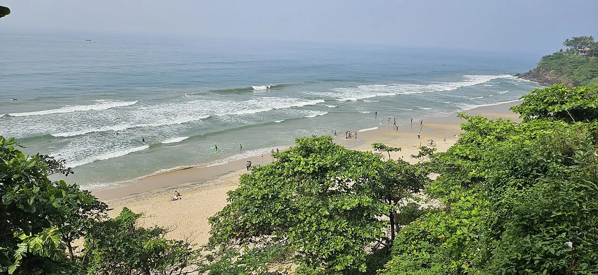

Varkala
Kerala, Inde · surf, baignade

Plage au pied de falaises rouges, bordée de cafés. Des vagues accessibles pour apprendre.
- Lieu
- Kerala, Inde
- Niveau
- Débutant
- Activités
- surf, baignade
- Type d'eau
- Mer / océan
- Coordonnées
- 8.73, 76.70 (position approximative du secteur)
Dangers à connaître
- Courants forts.
- Mousson de juin à septembre.
Le conseil d'Ocean Buddy
Baigne-toi entre les drapeaux : les courants sont puissants hors saison.
Ouvrir dans Ocean Buddy Télécharger sur l'App Store
Source : Fiche Ocean Buddy · septembre 2026 · à vérifier localement.